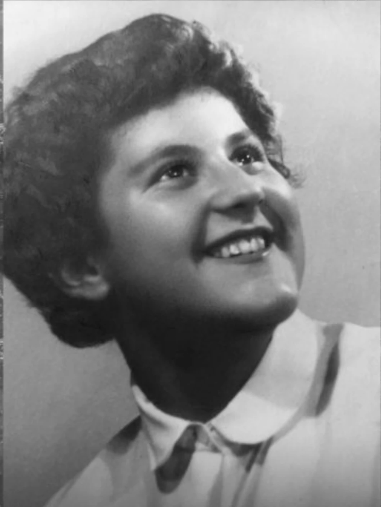
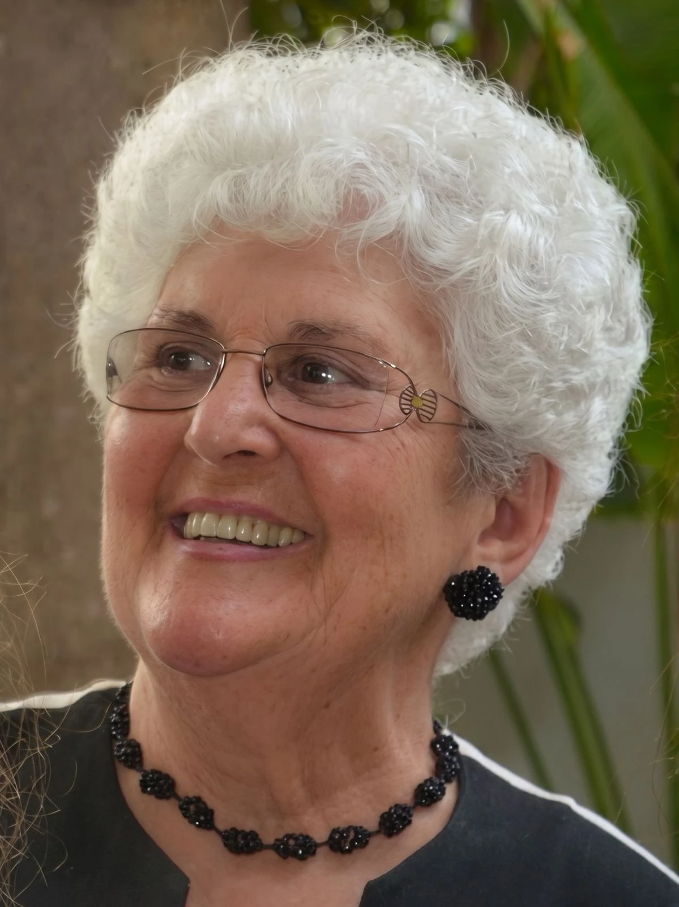

Koszmovszky Edina, témoin et actrice courageuse de la révolution hongroise de 1956, est décédée le 12 mai 2026 à l'âge de 87 ans. Elle a été inhumée le 3 juin 2026 au cimetière municipal de Rákoskeresztúr de Budapest, dans la parcelle 300 dédiée aux héros de la révolution de 1956. Son parcours de vie illustre à la fois les bouleversements tragiques de l'histoire hongroise du XXe siècle et la force de l'engagement personnel et de l'amour de la patrie.
Née à Budapest le 23 août 1938 dans une famille noble persécutée par le régime communiste, elle ne put poursuivre d'études supérieures en raison de ses origines sociales. Elle entra donc très tôt dans la vie active : elle travailla d'abord dans une usine de produits surgelés (Mirelit), puis comme dessinatrice technique à l'usine Widenta et à la manufacture de porcelaine de Kőbánya.
Les événements de 1956 marquèrent à jamais son existence. Le 23 octobre, devant la foule rassemblée devant la Radio hongroise, elle fut la première à lire publiquement les 14 points des étudiants. Unique femme au sein de la délégation de dix personnes, elle participa également aux négociations avec la direction de la radio. Après la diffusion du discours d'Ernő Gerő – alors premier secrétaire du Parti des travailleurs hongrois et l'un des principaux dirigeants du régime communiste – au lieu de la lecture des revendications, les affrontements qui éclatèrent sur place devinrent l'un des moments décisifs de la révolution.
Durant les jours de l'insurrection, elle apporta son aide en tant que volontaire aux blessés de l'hôpital de la rue Villányi, donna son sang et soigna les victimes des combats. Menacée d'arrestation par la police politique, elle finit par émigrer avec l'aide de sa famille vers la France, où elle reconstruisit sa vie.
En 1959, elle se maria et devint mère de quatre enfants. À partir de 1963, elle vécut à Nice. Très engagée dans la communauté hongroise de France et dans la vie ecclésiale, elle exerça pendant des décennies un important service pastoral et communautaire. Elle eut la joie de rencontrer à deux reprises le pape Jean-Paul II et travailla entre 1992 et 2000 comme accompagnatrice pastorale dans un hôpital psychiatrique à Nice.
La famille occupa toujours une place centrale dans sa vie ; elle transmit à ses enfants, petits-enfants et arrière-petits-enfants le sens de l'amour et de l'unité familiale.
À partir des années 2000, elle revint régulièrement en Hongrie afin de témoigner dans des lycées et des universités sur la révolution de 1956, partageant ses souvenirs personnels et portant un message de liberté et d'unité nationale. Elle éprouva une grande joie lorsque l'un de ses fils revint s'installer en Hongrie avec sa famille en 2005, permettant ainsi à une partie de la famille de renouer avec sa patrie après de longues années d'exil.
Pour son engagement exceptionnel et son action publique, elle fut décorée en 2022 de l'Ordre du Mérite hongrois. En 2024, elle revint définitivement s'installer en Hongrie et passa ses dernières années à Sződliget.
Koszmovszky Edina, az 1956-os forradalom egyik bátor tanúja és résztvevője 2026. május 12-én, 87 éves korában elhunyt. 2026. június 3-án helyezték örök nyugalomra a budapesti Rákoskeresztúri Újköztemető 300-as parcellájában. Életútja nemcsak a XX. századi magyar történelem tragikus fordulatait, hanem a személyes helytállás és a hazaszeretet erejét is példázza.
Budapesten született, 1938. augusztus 23-án, egy, a kommunista diktatúra által üldözött nemesi családban. Származása miatt nem tanulhatott tovább felsőfokon, ezért fiatalon munkába állt: dolgozott a Mirelit gyárban, majd műszaki rajzolóként a Widenta gyárban és a Kőbányai Porcelángyárban.
Az 1956-os forradalom eseményei örökre meghatározták életét. Október 23-án a Magyar Rádió előtt összegyűlt tömeg előtt elsőként olvasta fel nyilvánosan a diákság 14 pontját. A tízfős küldöttség egyetlen női tagjaként személyesen vett részt a rádió vezetőségével folytatott tárgyalásokon is. Miután a követelések ismertetése helyett Gerő Ernő beszéde hangzott el a rádióban, a helyszínen kitört összecsapások a forradalom egyik sorsfordító pillanatává váltak.
A forradalom napjaiban önkéntesként segítette a sebesülteket a Villányi úti kórházban, vért adott és ápolta a harcok sérültjeit. Az ÁVH üldözése elől végül családja segítségével Franciaországba emigrált, ahol új életet kezdett.
1959-ben kötött házasságot, négy gyermek édesanyja lett, majd 1963-tól Nizzában élt. A franciaországi magyar közösség és az egyházi élet aktív tagjaként évtizedeken át végzett közösségi és lelkipásztori szolgálatot. Kétszer találkozott II. János Pál pápával, 1992 és 2000 között pedig lelkipásztorként dolgozott a nizzai pszichiátriai kórházban.
Életének egyik legfontosabb középpontja a család volt, amelynek szeretetét és összetartó erejét gyermekeinek, unokáinak és dédunokáinak is továbbadta.
A 2000-es évektől rendszeresen visszatért Magyarországra, hogy középiskolákban és egyetemeken beszéljen a fiataloknak az 1956-os forradalomról, személyes emlékein keresztül átadva a szabadság és a nemzeti összetartozás üzenetét. Külön örömöt jelentett számára, hogy egyik fia 2005-ben családjával Magyarországra költözött vissza, így a család hosszú emigráció után ismét részben hazatalált Magyarországra.
Kiemelkedő helytállásáért és közéleti tevékenységéért 2022-ben Magyar Érdemrend kitüntetésben részesült. 2024-ben végleg hazaköltözött Magyarországra, utolsó éveit Sződligeten töltötte.
Que le Seigneur l'accueille dans sa lumière. Az örök világosság fényeskedjék neki.